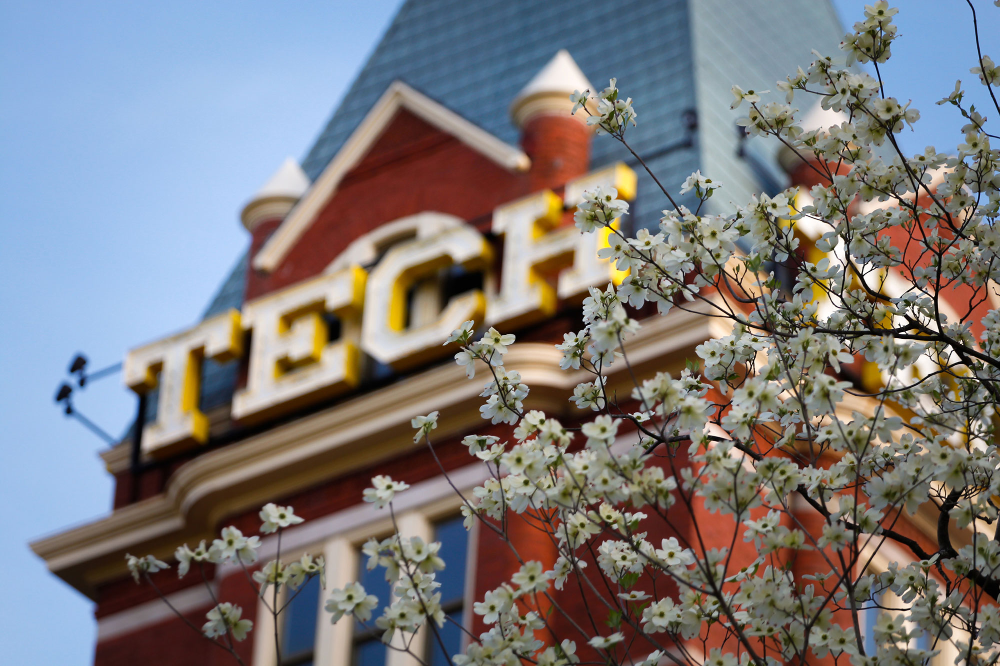
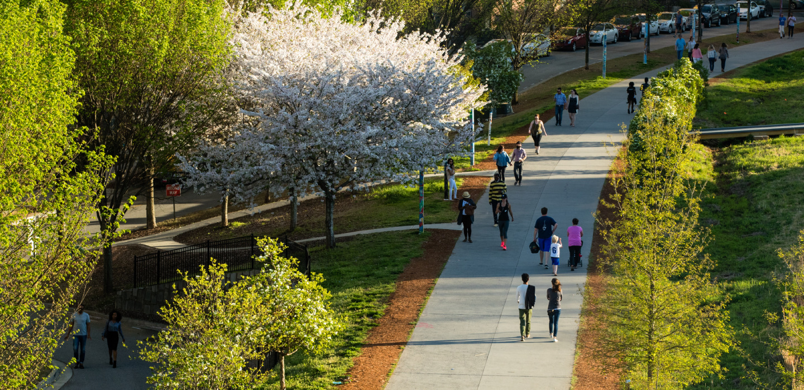

Services
We offer a broad range of services to maximize your building’s performance.
We are experts in LEED administration, commissioning, energy modeling, energy audits, and sustainable facility management. We also offer training sessions and workshops to share our expertise with others.
We guide project teams through the green building process with practical expertise, LEED credit strategy, documentation oversight, and a collaborative approach that keeps the project moving until certification is achieved.
Commissioning verifies that building systems are designed, installed, tested, and operating as intended. We support both new and existing buildings through review, observation, testing, issue tracking, and handover documentation.
Energy modeling helps teams test design scenarios, evaluate efficiency measures, support code and LEED goals, and make data-backed decisions that improve performance and may reduce construction costs.
Energy audits compare actual building performance against expected performance, reveal cost-saving opportunities, and provide owners with a clear roadmap for improving energy, water, operations, and occupant outcomes.
We help owners reduce operating costs, improve occupant productivity, extend equipment life, and develop practical sustainable operations plans that can be adopted by internal teams or supported remotely.
We provide tailored learning experiences for project teams, owners, students, and professional groups across green building, LEED, commissioning, energy modeling, energy audits, and facility operations.